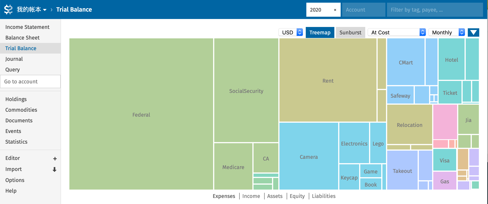

记帐是我的一个习惯，也是爱好。自Emacs 上使用 Beancount 记帐起，我改用 Beancount 记帐已有一年有余。Beancount 简便轻巧，帐目亦是非常清晰。通过其前端 fava 对帐目进行可视化后，还能获得很多平时不会注意到的信息。下图是我 2020 年的支出，很明显地可以看到在疫情之下，我的支出以解决生理与安全需求为主，也可以看到由于支出大幅缩减，税居然占了我去年支出的一半。

Figure 1: 我的 2020 支出可视化
这张图则是我自记帐以来在电影方面的支出，可以看到 2018-2019 年由于毕业找工作，出现了一个很大的平台期，也可以看到自今年三月疫情爆发以来，我再也没有去过电影院。

Figure 2: 电影类支出
不过这一年来，我开始工作，也和女票同住，出现了更多类型的帐目。而这半年因新冠宅家，花销颇少，反而便懒于记帐了，一不小心便产生了好几个月的 lag，如何高效地记录各种类型的帐目反而成了一个问题。Beancount 虽然用的人不少，可是官方 document 写得非常硬核，中文资源又多浅尝辄止，我越是想要简化自己的流程，越是产生了更多的疑惑。最近花了圣诞元旦 MLK 三个长周末，总算将各种疑惑都理清了。
本地环境
beancount 与 fava 的组合可以很方便地浏览我的财务报表，我之前都是简单地呼出并关闭，不是特别优雅。这次就想配置一个docker，退可常驻后台，进可部署云端。
首先准备一个 Dockerfile，将需要用的插件都申明于中。如果本来就是在虚拟环境中安装的 beancount，则可更简单地通过 pip freeze 的 requirements.txt 来配置 docker。
1
2
3
4
5
6
7
8
9
10
11
12
13
14
15
|
FROM python:alpine as builder
RUN apk add --update libxml2-dev libxslt-dev gcc musl-dev g++
RUN pip install --prefix="/install" fava
RUN pip install --prefix="/install" beancount_share
RUN pip install --prefix="/install" beancount_plugins
FROM python:alpine
COPY --from=builder /install /usr/local
ENV BEANCOUNT_FILE ""
ENV FAVA_OPTIONS ""
EXPOSE 5000
CMD fava --host 0.0.0.0 $FAVA_OPTIONS $BEANCOUNT_FILE
|
然后封包并部署即可。
1
2
3
4
|
docker build -t fava .
docker run --detach --name="beancount" --publish 5000:5000 \
--volume $(pwd):/bean \
--env BEANCOUNT_FILE=/bean/main.bean fava
|
远程操控「待定」
官方 github 中还推荐了更为安全的全局部署方式，然而我照做之后并不成功。以后有时间的话可能还是要回来研究一下，此处先占个位子。
1
2
3
4
5
6
7
8
9
|
docker run --detach --link beancount --publish 4180:4180 \
--name beancount-oauth \
--volume $(pwd)/oauth2_proxy.cfg:/etc/oauth2_proxy.cfg \
--volume $(pwd)/authenticated-emails:/etc/authenticated-emails \
--env "VIRTUAL_HOST=knowsome.science" \
--env "LETSENCRYPT_HOST=knowsome.science" \
--env "LETSENCRYPT_EMAIL=<my email>" \
skippy/oauth2_proxy -config=/etc/oauth2_proxy.cfg \
-http-address="0.0.0.0:4180" -provider=google
|
1
2
3
4
5
6
7
8
9
|
docker run --detach --publish 80:80 --publish 443:443 \
--name nginx \
--volume /etc/nginx/conf.d \
--volume /etc/nginx/vhost.d \
--volume /usr/share/nginx/html \
--volume $(pwd)/certs:/etc/nginx/certs:ro \
--volume $(pwd)/htpasswd:/etc/nginx/htpasswd:ro \
--label com.github.jrcs.letsencrypt_nginx_proxy_companion.nginx_proxy=true \
nginx
|
1
2
3
4
5
6
7
|
docker run --detach \
--name nginx-gen \
--volumes-from nginx \
--volume /var/run/docker.sock:/tmp/docker.sock:ro \
jwilder/docker-gen \
-notify-sighup nginx -watch -only-exposed -wait 5s:30s \
/etc/docker-gen/templates/nginx.tmpl /etc/nginx/conf.d/default.conf
|
1
2
3
4
5
6
7
|
docker run --detach \
--name nginx-letsencrypt \
--env "NGINX_DOCKER_GEN_CONTAINER=nginx-gen" \
--volumes-from nginx \
--volume $(dirname $(realpath $0))/certs:/etc/nginx/certs:rw \
--volume /var/run/docker.sock:/var/run/docker.sock:ro \
jrcs/letsencrypt-nginx-proxy-companion
|
系列链接